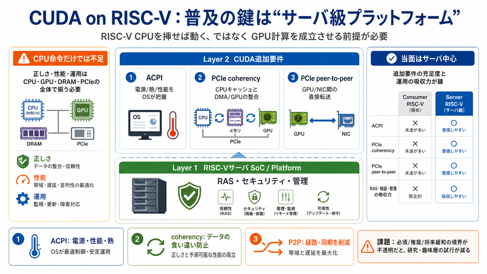

Nvidia Extends CUDA to RISC-V, But Most Existing Hardware Won't Qualify — Hot Chips 2026: CUDA Targets RISC-V –… | Zeli
At Hot Chips 2026, Nvidia outlined its plans to bring CUDA to RISC-V CPUs, aiming to feed GPU compute from RISC-V hosts.…

NVIDIAの狙いは「RISC-VのCPUを挿せば動く」ではなく、GPU計算を成立させるプラットフォーム全体の前提を満たすことだ。
CUDAはGPU単体の話ではなく、CPU側のメモリ整合性・電源/熱制御・割り込み/管理・通信（PCIeなど）まで一連で整合する必要がある。
CUDAをRISC-Vへ拡張する計画は前向きだが、当面は多くのRISC-Vが満たさないサーバ級要件が前提になりやすい。
CUDA対応には「命令セット」より先に、サーバとしての基礎（信頼性・可用性・保守性）と、OSが把握できる管理情報が要る。
日本語補助：RAS（Reliability, Availability, Serviceability）＝信頼性・稼働率・保守性。
ACPI（Advanced Configuration and Power Interface）は、OSが電源・性能・熱などの管理情報を掴むための仕組みで、CUDAの制御前提になる。
ポイント：標準が整っても、実装が広がるまで時間差が出る。
PCIe coherencyがないと、CPUキャッシュとDMA/GPUアクセスの整合が崩れ、読み書きの正しさと性能の両方にリスクが出る。
結論：保証としてのcoherencyを、サーバCPUの標準機能として求める。
peer-to-peer PCIeは、速さ（直接転送）だけでなく、CPU経由による経路・同期の増加を抑えて構成の単純さにも効く。
CUDAに加えて、通信ライブラリ（例：NCCL）やネットワーク/オフロード（例：DOCA）の成立にも要件が波及し、プラットフォーム要求が強まる。
NVLink Fusion（他社チップでNVLink IPを使う）では、IP統合の複雑性が高く、ソフト/通信スタックまで含めた緊密な協業が前面に出る。
ここが強いほど、対応は「早い普及」より「要件を揃えたサーバ」へ寄りやすい。
筆者の見立てでは、既存のRISC-V普及機（特にコンシューマ）で要件未達になりやすく、CUDA対応はサーバ中心に寄る可能性が高い。
要件が厳格すぎる場合、趣味層・研究コミュニティによる試行（部分構成での実験）が抑制され、エコシステムの立ち上がり速度に影響しうる。
記事中では要件の概観は掴めるが、「どこまで満たせば実用か」や、必須/推奨/将来緩和の区分が分かりにくい点が弱点になりうる。
補足：普及には要件だけでなく、互換性範囲と緩和のロードマップが効く。
CUDA対応RISC-Vの現実は「CPU命令セット」より「プラットフォーム整合性」が決める。見極めには、ACPI・coherency・P2Pの実装有無と、その検証体制が要点になる。
この整理は、ユーザー提示の要約（CUDA/RISC-V拡張・ACPI/PCIe要件・NVLink Fusion・普及論）を素材に再構成している。
次の一手： 実装評価では、対象SoC/サーバのACPI・PCIe coherency・P2P対応と、GPU通信スタック（NCCL等）の稼働実績を確認する。
At Hot Chips 2026, Nvidia outlined its plans to bring CUDA to RISC-V CPUs, aiming to feed GPU compute from RISC-V hosts.…
The News: SiFive, the leader in high-performance RISC-V processor IP, announced it is adopting and integrating NVIDIA NV…
NVLink Fusion provides a unified interconnect fabric capable of coherently linking CPUs, GPUs, and custom accelerators a…
Recognizing this demand for flexibility, NVIDIA has broadened NVLink Fusion to allow select third-party chipmakers to in…
“We need CPU host boards with PCIe slots to plug in GPUs”, he explains. No surprise, coming from a company that, for man…